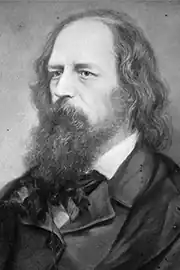

Альфред Теннісон (англ. Alfred Tennyson; 6 серпня 1809 — 6 жовтня 1892) — англійський поет-романтик. 1-й барон Теннісон.
Народився й провів дитинство в Лінкольнширі. Батько Теннісона був священиком, за жіночою лінією вів свій рід від Плантагенетів. Теннісон здобув чудове виховання. Разом зі своїм старшим братом Чарльзом, який теж мав схильність до поетичної творчості, Теннісон видав у 1827 року збірку віршів "Poems of Two Brothers" (анонімно).
1828 року Теннісон разом із братом вступив до Триніті-коледжу Кембриджського університету, але закінчив його без наукового ступеня. Університетський період ознаменувався дружбою з Галамом (сином історика), рання та трагічна смерть якого надихнула згодом Теннісона на один з його творів, "In Memoriam". В університеті він отримав золоту медаль за поему "Тімбукту", написану на заданий Академією сюжет. Критика ("Atheneum" та ін.) високо відзначила цей ранній твір молодого поета. 1830 року вийшла друга збірка Теннісона — "Poems, Chiefly Lyrical" (всього 53). У ньому зібрано багато віршів, які стали згодом дуже популярними. У віршах присутні натяки на роздвоєність душі, на боротьбу почуття та розуму, теми, що глибше розвинуті в "The Two Voices". Незважаючи на талановитість, за небагатьма винятками, Теннісон одержав несхвальні відгуки (особливо від відомого "викривача" Кітса Вільсона, в журналі "Блеквуд"). 1832 року вийшла третя збірка, в якій вміщені деякі з його найкращих творів: "The Lady of Shalott", "Œnone", "The Lotos-Eaters", "A Dream of Fair Women", "The Palace of Art" та ін. Ця збірка вважається критиками вище попередньої; вірш простіший та музичніший, почуття та настрої різноманітніші та глибші. 1842 року вийшло нове видання віршів Теннісона, в яке увійшли найвідоміші з його ліричних віршів та поем: "Ulysses", "Lady Clara Vere de Vere", "Locksley Hall", "The Blackbird", "Of old sat Freedom on the heights…", "Sir Launcelot and Queen Guinevere", "The Beggar Maid", "The Two Voices" та ін. Збірник викликав загальне захоплення та висунув Теннісона в ряд першокласних англійських поетів. Для збірки притаманні всі найкращі властивості поезії Теннісона: глибокий ліризм, чуття природи, вміння відтворювати особливу чарівність спокійного англійського пейзажу, описувати англійське життя в усіх його різновидах: від замків баронів до селянських хат. Мелодійний, ніжний та колоритний вірш зливається з філософським змістом, що відображає ідейне життя сучасної поетові Англії — боротьбу позитивної науки зі спіритуалістичними переконаннями. У цьому збірнику проявилося також особливе мистецтво Теннісона створювати поетичні жіночі образи: Ліліана, Травнева королева, Елінор й інші. 1850 року Теннісон одружився, отримав звання "поета-лауреата" та видав збірку "In Memoriam A.H.H.". Ця книга вийшла спочатку анонімно, але ніхто не сумнівався в тому, що лише Теннісон міг її написати. "In Memoriam A.H.H." — низка окремих елегійних віршів, написаних на смерть Галлама; за висловом критика, це "один з найбагатших дарів, принесених дружбою на вівтар смерті". Теннісон оточив романтичним ореолом свою дружбу з Артуром Халламом та створив сучасний варіант античних ідеалів дружби. 1853 року почалася війна в Криму (воєнні дії на суходолі почалися 1854 року), в якій бойові дії вели французи, турки, піддані королівства Сардинія та англійці проти Російської Імперії Миколи I. У битві при Балаклавській долині під російським вогнем загинула англійська Легка кавалерійська бригада, яку Теннісон оспівав у вірші "The Charge Of Light Brigade". Наступний великий твір Теннісона — поема "Maud" (1855), історія трагічного кохання, викладена від імені нещасного героя. "Maud" викликала осуд у критиків і читачів, оскільки здавалася апологією війни — на противагу наміру автора, який зовсім не ототожнював себе зі своїм героєм. У цей час Теннісон також написав вірш з нагоди перепоховання останків американського письменника Едгара Аллана По в 1875 році, який був зачитано на церемонії похорону. Його останнім, написаним за день до смерті, віршем був текст "Crossing the Bar" — релігійні строфи, що говорили про примирення зі смертю; покладені на музику, вони були виконані в день його похорону. За бажанням поета похорон його мав світлий, урочистий характер; замість жалобих кольорів у одязі та оздобленні Вестмінстерського абатства, де він похований (в "куточку поетів" — "Poets' Corner") домінував білий колір.